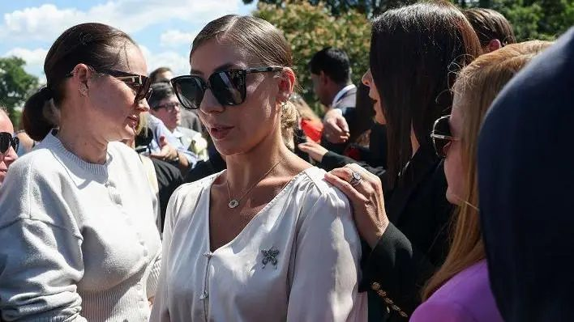

Marina Lacerda came forward in September 2025 to report having been a victim of sexual violence by Jeffrey Epstein. Now, in an interview with BBC News Brasil, she says that many other Brazilian women like her would have been at the billionaire's mansion and would have been abused by him.
"At least around 50 Brazilian women, I think. I brought some of those girls, and they brought other girls," Marina says.
Epstein died in a prison cell in New York in August 2019, while awaiting trial — with no possibility of bail — on charges of sex trafficking, more than a decade after his conviction for soliciting prostitution from a minor, for which he registered as a sex offender.
During the period of the abuse, Lacerda says she was living in Astoria, a neighborhood in the Queens district of New York, known for having a large Brazilian community.
BBC News Brasil first revealed the connection of the Epstein case with Brazil through a document released by the U.S. Department of Justice, which spoke of a "major Brazilian group," but the names and details that could give more context were redacted.
Marina is from Belo Horizonte (MG) and says she went to the United States when she was 8 years old to accompany her mother. She says that, still as a teenager, she worked in various different jobs, but the money was not enough to support herself. "I was an immigrant and a minor," she says.
That is when she discovered a group of young people, linked to a church in Astoria, with other Brazilians. Until one of them arrived with an invitation.

Marina Lacerda says she was abused by Epstein from ages 14 to 17
"That girl said: I know you are going through tremendous hardship at home and I wanted to help you. There's a super-rich, powerful guy who lives in Manhattan, and he likes to get massages from young girls."
She says she had already worked temporarily as a receptionist at a spa in Koreatown, a Manhattan neighborhood, and that she had learned the basics of how to give a massage. "Of course I had no training, right? But I told that friend I knew how."
The friend then warned her: "You have to wear a bikini underneath, because he likes girls who give massages in a bikini, in a bra."
'You've never made $300 in 40 minutes'
Marina tells BBC News Brasil that she found the friend's invitation very strange, but decided to go anyway. She was 14 years old.
When she arrived at the place, she saw that things would be very different from what her colleague had said. "I was very nervous and anxious, but this friend said he was super nice," she says.
"An employee took me, took that friend, put us in an elevator, and we went to the third floor. Then a door opened with a corridor. We walked to a massage room with everything dark. The window was covered."
Epstein reportedly introduced himself for the first time. "He asked where I was from, how old I was, if I went to school."
Marina reports that Epstein spent a good part of the time on the phone and gave the impression of talking with important people. According to her, after ending one of the calls, he turned around and began to touch her.
She says they asked her to take off her blouse. Epstein, trying to seem kind, wanted to touch her. "I said: 'no'. I said I didn't feel comfortable." She then noticed a change in atmosphere. The young woman who was with her supposedly reacted with irritation. "She looked at me with anger. I thought that was out of place," she recounts.
According to Marina, Epstein then tried to minimize the situation. "He said: 'give it time, she'll feel comfortable with me.' At that point, I switched places with my friend, and he started touching her."
She says that Epstein's behavior changed with her Brazilian colleague. "He was super aggressive."
Marina says the situation escalated rapidly and that she was in shock. "It was a very intense thing. I didn't know that was going to happen."
When Epstein finished, they got dressed, received the money, and left. "He said he would see me again. I stayed quiet, thinking I would never see that guy again."
When they left, Marina says she complained to the friend about the situation. The colleague replied: "You've never made $300 in 40 minutes."
"We argued, she threw the money in my face and told me to stop complaining, that I needed that money and it was going to help me a lot."
She says the friend convinced her, and she went back to the place other times. "You live in Astoria, you're an immigrant, you don't know anyone. This guy is going to help you."
'We brought several Brazilian women, unfortunately'
Marina Lacerda says that after a few visits, the situation "escalated."
"It started becoming a mess. He [Epstein] started asking me to bring girls. I didn't want my friends to know about this. But there was a friend who was going through abuse from her brother and lived with me for a while." That friend agreed.
From then on, the pair reportedly began to seek out other girls for Epstein, Marina recounts.
"Girls who needed to work because they were immigrants, didn't have immigration documents, didn't have family. A lot of Brazilians, Russians, Hispanics. We brought several Brazilian women, unfortunately," she says.
She says that over time, she began to have more freedom at the house, and that new girls asked to come with her to the place. "He never said we were minors. He said he was getting massages from pretty, young girls."
She also recounted going to Epstein's office and that he would give her money when she needed it. "He was very manipulative. He always told us he owned governments, banks."
She also reported an alleged episode of racism, when she had brought a Black Brazilian woman to the house. "He got angry with me. Said I had to stop bringing dark-skinned girls. I think they didn't even pay her."
Over time, Lacerda says Epstein began to complain that she was only bringing "old" girls and that she should look for younger ones. "I was already feeling very bad about bringing girls who were 15, 16."
Recalling the situation, she laments the lack of support for teenagers like herself. "I went out to Brazilian clubs and saw girls 14, 15, 16 years old, with no ID. Where were our mothers? I think my mother made a lot of mistakes. If she had given me a proper upbringing, had found a way not to leave me loose, I wouldn't have done the things I did. I brought the girls and the girls brought other girls. I was abused there from 14 to 17 years old."
Testimonies to the FBI
Marina says she was approached by the FBI — the American federal police — to tell what she knew about Epstein as early as 2008, but at that time, she was afraid to speak. She recounts that she was living with other Brazilians in a house, also in Astoria.
"They were very aggressive with me. They came asking to speak with me, that I had to talk to them, that there was a case with Epstein. I had no idea what was happening."
Lacerda says she called a secretary of Epstein's at the time to ask what was happening and that he allegedly promised to send a lawyer to help. She was instructed never to call that number again.
"I was very scared, I didn't tell everything. The lawyer wasn't for me, it was for Epstein, to protect him."
In 2019, the FBI sought Marina again. This time, she decided to speak in more detail. Epstein would die that same year, in July, in a prison.
"They wanted to know who I brought there [to the house]. When I gave my testimony, I didn't remember much at that point. Trauma destroys you. I was very nervous."
Attacks after decision to go public
In September 2025, Marina Lacerda came forward publicly to tell her story for the first time. She gave an interview to the American ABC TV network and also participated in a press conference with eight other women who accuse Epstein of abuse.
The act, which called for the revelation of all documents about the case, took place in front of the U.S. Congress in Washington. From then on, she decided she should speak more about the case: she created pages on Instagram and TikTok and hired a person to help her with the content. Her goal, she says, is to raise awareness about physical and psychological abuse.
"After I broke my silence, I haven't stopped. Opening platforms and starting to speak on podcasts. I talk about how to teach our children to say no. Sexual abuse, emotional, financial, physical — it starts with us. What you allow to happen. Many parents don't have this knowledge."
Since she began giving interviews, she laments that she has been criticized on social media.
"People attack, saying I stayed, that I went back [to the house]. Why do you think other Brazilian women [victims of Epstein] don't want to say anything? The family will attack. When I spoke in Brazil, my family came down on me hard. And to think my family in Brazil never got involved in anything that happened here."
She says the family believed her accounts had some political objective. "They thought it had something to do with Lula or Bolsonaro. I said, guys, I don't care about Lula and Bolsonaro. I don't care about Trump here."
She says she reads some of the comments on publications about her and many are offensive, which can discourage other victims from telling their stories. Marina says she constantly receives reports from other Latin American women who were abused but don't want to go public for fear of criticism.